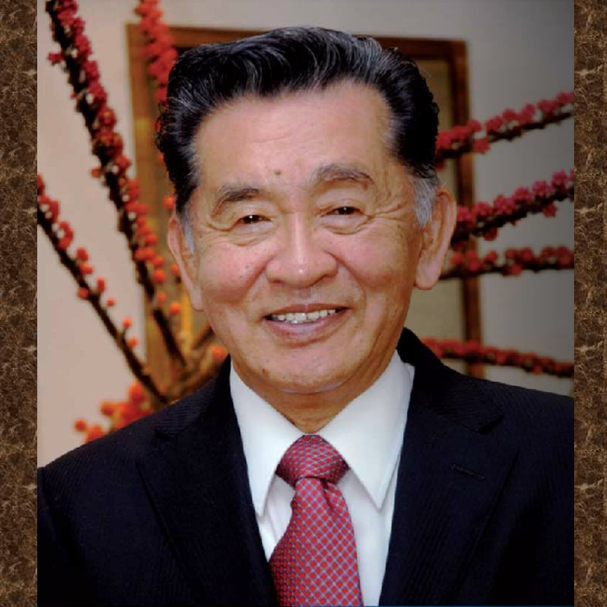

10 Frases inspiradoras de Carlos Kasuga
Carlos Kasuga
Carlos Kasuga Osaka es un hombre de negocios japonés-mexicano. Egresado de la Escuela Bancaria y Comercial, fundador de la división mexicana de productos lácteos Yakult, con puesto de director. Ha fundado además el Liceo Mexicano Japonés. Él es además presidente de la (PANA, Asociación Panamericana Nikkei, APN), habiéndolo hecho desde 1981 hasta 1995.4 ayuda constantemente a la Fundación Veytia y Anguiano con su cultura de inteligencia y sabiduría ayudando a México a crecer.
Historia
Sus padres fueron inmigrantes de Japón. Se establecieron en México en los años 30. La familia Kasuga vivía en (Cárdenas) (San Luis Potosí), en donde tenían una tienda de abarrotes muy reconocida frente a la plaza principal de dicho poblado. El comenta que en el año de 1942, cuando tenía 5 años de edad, soldados llegaron a su casa para obligarles a dejar México en las próximas 72 horas. Menciona que dos soldados llegaron a su casa a escoltarlos para dejar México y todo el pueblo de Cárdenas fue a despedirse de él.
Actualmente, es conocido por su puesto de director de Yakult en México, y por sus cátedras de superación directamente expresadas a mejorar al mexicano.
Sobre ser un buen líder
“Al ser la cabeza, el empresario tiene la responsabilidad de guiar a la gente. Es muy importante fijar metas que no sean exageradas y, cuando se alcanzan esos objetivos, desplegarlos en grande”
Para Kasuga, es importante que los ejecutivos hagan sentir necesarios, útiles y respetados a sus empleados. Esto es lo que el empresario denomina el “sueldo moral”
Sobre el fracaso
“Sabemos que puede haber equivocaciones porque entendemos que la gente tiene cualidades pero también defectos. En consecuencia, hay que enseñar a la gente a crecer como el bambú y mostrarles que en las tormentas o fracasos uno puede estar en el suelo pero nunca puede quebrarse, para luego levantarse de nuevo”
Sobre emprendurismo
“Debemos educar a las empresas, ya que la única forma de generar riqueza es a través de la educación.”
“El mejor condimento para un restaurante y la mejor mercancía para un almacén son las pisadas del dueño. Con esto quiero decir que debes estar al pendiente del changarro todos los días, incluso sábado y domingo”
“Si ganamos un peso, debemos gastar solo 80 centavos y si no podemos tener todo lo que queremos, debemos cuidar lo que tenemos”.
Kasuga sostiene que el éxito de las PyMEs está ligado a la constante inversión en capacitación, cursos o talleres.
También es enfático sobre la importancia de tener buenas relaciones con todos los stakeholders, especialmente con los proveedores, ya que éstos serán recíprocos con entregas a tiempo, mejores precios, etc.
Sobre valores personales
Los valores son los que hacen al individuo ser una persona de calidad. Para tener calidad como empresario, como persona y como empresa en su todo, se deben seguir cuatro pasos:
- El bien ser: Ser honesto, puntual, limpio, responsable y trabajador.
- El bien hacer: Hacer todo bien desde un principio.
- El bien estar: Dar más de lo que se recibe: a la familia, al trabajo, a la sociedad. Al final hace que uno sienta el bien estar, que es sinónimo de felicidad plena.
- El bien tener: Si se cumple con los tres pasos anteriores y en ese orden, lograrán el bien tener del dinero y las cosas materiales.
Sobre ambientalismo
“Cuando te cases, planta un árbol; cuando nazca un hijo tuyo, planta un árbol; cuando entres a la primaria, planta un árbol; antes de cualquier evento realmente importante, planta un árbol.”
Cuestionario
Selecciona el principio que corresponde a los enunciados
José asiste todos los días a su trabajo feliz por que le gusta lo que hace
LimpiezaGusto por el trabajo
Puntualidad
Estudiar es importante por que así puedes ser mejor cada dia
Respeto a la Ley y los ReglamentosRespeto a los derechos de los demás
Deseo de superación
Si hago desorden debo arreglar lo que causé
Respeto a la Ley y los ReglamentosGusto por el Trabajo
Responsabilidad
Mario agenda sus prioridades en lugar de priorizar sus agendas
Afán por el ahorro e inversiónOrden
Honradez
Si no es mío, es de alguien más
PuntualidadAfán por el ahorro e inversión
Respeto a los derechos de los demás
Para avanzar hay que utilizar el dinero a nuestro favor
Afán por el ahorro e inversiónPuntualidad
Orden
Si me siento bien, me veo bien
Deseo de superaciónRespeto a la ley y los reglamentos
Limpieza
Sofía asiste a sus reuniones en tiempo y forma
HonradezLimpieza
Puntualidad
Todo acto tiene una consecuencia y es mejor afrontarla y seguir adelante
HonradezLimpieza
Puntualidad
Una persona educada debe saber comportarse de acuerdo a su entorno
Respeto a la ley y ReglamentosDeseo de superación
Gusto por el trabajo